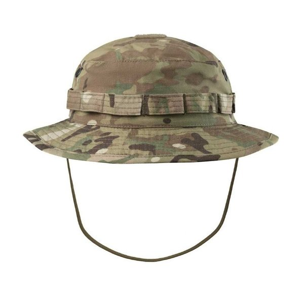
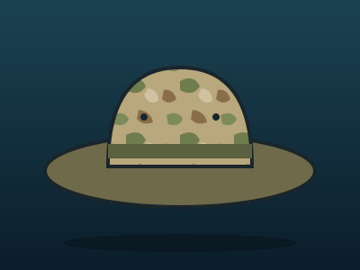
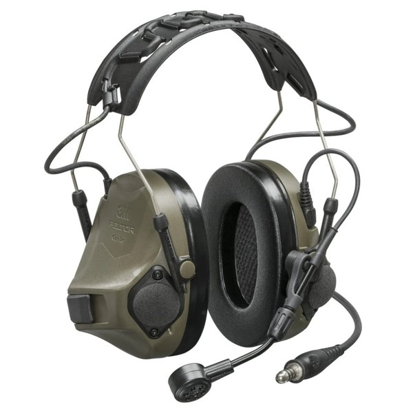

Фото моделі
Фото моделі




Helikon-Tex
Helikon-Tex Boonie Mk2 Hat, NyCo Ripstop
Панама з широкими полями з тканини NyCo Ripstop.
≈ 1 000 грн ≈ 20 €
У магазинах ЄС ≈ 16–23 €. Ціна орієнтовна, з магазинів ЄС і США, листопад 2026. Ціни в євро перераховано за офіційним курсом НБУ на 17.11.2026: 1 € = 49,99 грн.
Колір: Олива, MultiCam та ін.
Розмір:
- Доставка Новою Поштою по всій Україні
- Обмін і повернення — 14 днів
- Консультація з підбору перед покупкою
Широкі поля закривають обличчя й шию від сонця та дощу. Навколо тулії є петлі, у які можна вставити гілки чи траву для маскування.
Схожі панами видно на фото №5 і №6.
| Колір | Олива, MultiCam та ін. |
|---|---|
| Розміри | S–XL |
| Бренд | Helikon-Tex |
| Тканина | NyCo Ripstop (нейлон і бавовна) |
Доставка. Новою Поштою або Укрпоштою по всій Україні, 1–3 дні. Самовивіз — за домовленістю. Прилади нічного бачення відправляємо лише після перевірки й з оголошеною вартістю.
Оплата. Онлайн-оплата карткою через WayForPay або оплата при отриманні.
Гарантія. 24 місяці на прилади нічного бачення, 12 місяців — на підводне спорядження. Одяг і аксесуари можна обміняти або повернути протягом 14 днів.
Сайт — навчальний проєкт: замовлення не оформлюються, товари й ціни є прикладом.
Схожа річ у фотожурналі
Схожі товари
Фото моделі

Фото моделі Фото моделі
Фото моделі
 Фото моделі
Фото моделі